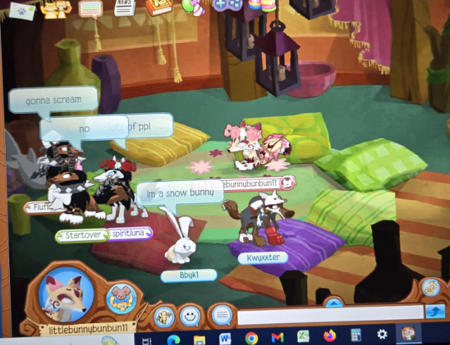

to adopt us
yes, we were roleplaying as orphans.
Sometimes the room would be so packed with orphans that our avatars would blend into each other
We couldn't all fit into the pillow room at once.
Sometimes I would go to an emptier server. But in those cases, a parent might never come.
The PARENT players would select their orphan
